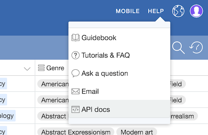

This page will guide you through using the Airtable Javascript API from the browser. The API will use the "Art Gallery Example" base to display artists and their biographies.
This API is based on the Airtable node.js library. Running in the browser is experimental, so some features may not work. Also, using the library in the browser currently exposes your private API key, so this is intended for educational purposes only.
Create an empty HTML page. Include JQuery and Airtable.js for browsers.
<!DOCTYPE html>
<html>
<head>
<script src="http://code.jquery.com/jquery-1.11.3.min.js"></script>
<script src="http://kasrak.com/airtable-api-guide/airtable.browser.js"></script>
</head>
<body>
<div id="artists"></div>
</body>
</html>
Go to your Airtable account page. If you don't already have an API key, you will see a "Generate API key" link. Click it to generate a new key. If you already have an API key, you don't have to do anything.
Now go back to your bases and open the "Art Gallery" base. (If you don't have it, click "New Base" and select the "Art Gallery" template.)
To open the API docs, click "Help" in the top right corner, then select "API docs".
The API documentation is custom generated based on the tables and fields of your base. Enable the "Show API key" and switch to the node.js tab.
body of the page
or in a separate Javascript file. Make sure to replace the
apiKey and base ID below with your own.
<script>
var Airtable = require('airtable');
var base = new Airtable({ apiKey: 'keykHOHLHddJw6MxX' }).base('appzZUAqomNZC55As');
base('Artists').list(3, null, {view: 'Main View'}, function(err, records, newOffset) {
if (err) {
console.log(err);
return;
}
records.forEach(function(record) {
console.log('Retrieved ', record.get('Name'));
});
});
</script>
Let's make the artists show up on the page:
<div id="artists"></div> <script> var Airtable = require('airtable'); var base = new Airtable({ apiKey: 'keykHOHLHddJw6MxX' }).base('appzZUAqomNZC55As'); base('Artists').list(3, null, {view: 'Main View'}, function(err, records, newOffset) { if (err) { console.log(err); return; } records.forEach(function(record) { console.log('Retrieved ', record.get('Name')); var $artistInfo = $('<div>'); $artistInfo.append($('<h3>').text(record.get('Name'))); $artistInfo.append($('<div>').text(record.get('Bio'))); $('#artists').append($artistInfo); }); }); </script>Here's what it'll look like:
Hopefully this helps you get started with the Airtable API. Read the documentation page for your base to discover all the other things you can do.
If you need some inspiration, here are some ways to extend the simple artist viewer we just built: